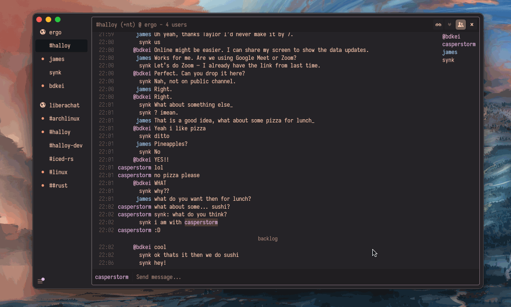

Halloy


Halloy is an open-source IRC client written in Rust, with the iced GUI library. It aims to provide a simple and fast client for Mac, Windows, and Linux platforms.
- IRCv3.2 capabilities
- SASL support
- DCC Send
- Keyboard shortcuts
- Auto-completion for nicknames, commands, and channels
- Notifications support
- Multiple channels at the same time across servers
- Command bar for for quick actions
- Custom themes
- Portable mode
Contributing
Halloy is free and open source. You can find the source code as well as report issues and feature requests on GitHub.
Installing Halloy
üí° To get the latest nightly version of Halloy, you can build from source.
Pre-built binaries
Download pre-built binaries from GitHub page.
Packaging status
macOS
The following third party repositories are available for macOS
Homebrew
brew install --cask halloy
MacPorts
sudo port install halloy
Linux
The following third party repositories are available for Linux
Flatpak
https://flathub.org/apps/org.squidowl.halloy
Snapcraft
Windows
Winget
winget install squidowl.halloy
Build from source
Clone the Halloy GitHub repository into a directory of your choice and build with cargo.
Requirements:
- Rust toolchain
- Git version control system
- Packages:
- Fedora-based distributions:
alsa-lib-devel openssl-devel - Debian-based distributions:
librust-alsa-sys-dev libssl-dev
- Fedora-based distributions:
# Clone the repository
git clone https://github.com/squidowl/halloy.git
cd halloy
# Build and run
cargo build --release
cargo run --release
Install from Source
The script install-linux.sh in the scripts directory of the Halloy repository will build and install Halloy on Linux systems (with the same requirements as building from source). By default the script will install Halloy in the ~/.local/ base directory (i.e. the executable will be put in ~/.local/bin/). To change the installation base directory, provide install-linux.sh with the long flag --prefix=<base/directory>
git clone https://github.com/squidowl/halloy.git
cd halloy
./scripts/install-linux.sh --prefix=<base/directory>
Getting started
To get started with Halloy, you need to connect to at least one IRC server. The template config file has been set up with the Libera server. However, there are many other servers available: OFTC, Undernet, EFnet, QuakeNet and many more. Halloy can connect to multiple servers at the same time.
Once connected to a server, you can join channels. This can be done automatically from the config file or manually using the join command: /join #channel1. To find channels, you can either use the list command: /list, or browse for channels online.
üí° Configuration in Halloy happens through a
config.tomlfile. See Configuration.
Here are a few useful IRC commands for a new user2
| Command | Example | Description |
|---|---|---|
/join | /join #halloy | Join a new channel |
/part | /part #halloy | Part a channel |
/nick | /nick halloyisgreat | Change your nickname |
/whois nickname | /whois halloyisgreat | Displays information of nickname requested |
/list *keyword* | /list *linux* | List channels. Keyword is optional |
-
Channel names always start with a
#symbol and do not contain spaces. ↩
Get in touch
Join #halloy on libera.chat (link) if you have questions, looking for help or just want to say hello.
For feature requests or reporting issues, please open a ticket on GitHub.
Maintainers
- andymandias (https://github.com/andymandias)
- casperstorm (https://github.com/casperstorm)
- tarkah (https://github.com/tarkah)
Contributors
Special thanks to all the people who makes Halloy happens
- 4e554c4c (https://github.com/4e554c4c)
- a-kenji (https://github.com/a-kenji)
- adamperkowski (https://github.com/adamperkowski)
- ameknite (https://github.com/ameknite)
- anarsoul (https://github.com/anarsoul)
- auronandace (https://github.com/auronandace)
- bbb651 (https://github.com/bbb651)
- Daeraxa (https://github.com/Daeraxa)
- englut (https://github.com/englut)
- funkeleinhorn (https://github.com/funkeleinhorn)
- ikigai-gh (https://github.com/ikigai-gh)
- jhff (https://github.com/jhff)
- KaiKorla (https://github.com/KaiKorla)
- ljrk0 (https://github.com/ljrk0)
- lodenrogue (https://github.com/lodenrogue)
- mikemykhaylov (https://github.com/mikemykhaylov)
- neilalexander (https://github.com/neilalexander)
- oldgalileo (https://github.com/oldgalileo)
- petergam (https://github.com/petergam)
- ramajd (https://github.com/ramajd)
- robert-groensfeld (https://github.com/robert-groensfeld)
- seth0xd (https://github.com/seth0xd)
- spoisseroux (https://github.com/spoisseroux)
- Tea23 (https://github.com/Tea23)
- theRAAPster (https://github.com/theRAAPster)
- VioletSpace (https://github.com/VioletSpace)
- YouFoundAlpha (https://github.com/YouFoundAlpha)
Did we forget you? We're sorry about that! Feel free to add yourself and create a pull request.
Connect with Soju
To connect with a soju bouncer, the configuration below can be used as a template. Simply change so it fits your credentials.
üí° as of 2025.1 Halloy supports
chathistory, so the machine name (like@desktop) is no longer needed whenchathistoryis enabled
[servers.libera]
nickname = "casperstorm"
username = "<your-username>/irc.libera.chat"
server = "irc.squidowl.org"
port = 6697
password = "<your-password>"
chathistory = true
You can enable infinite scrolling history as well, if you want to be able to load older messages
[buffer.chathistory]
infinite_scroll = true
Connect with ZNC
To connect with a ZNC bouncer, the configuration below can be used as a template. Simply change so it fits your credentials.
[servers.libera]
nickname = "<znc-user>/<znc-network>"
server = "znc.example.com"
password = "<your-password>"
# Depending on your ZNC setup you may need to apply these extra settings:
# Does your znc use a self-signed or expired certificate? See:
# https://halloy.chat/configuration/servers.html#dangerously_accept_invalid_certs
# Does your znc listen on a different port? See:
# https://halloy.chat/configuration/servers.html#port
Optional Features
Halloy supports optional features that can be enabled during compilation to add additional functionality. These features are not included by default to keep the binary size small and compilation fast.
Building with features
To build Halloy with specific features, use the --features flag:
# Build with a feature
cargo build --features tor
# Build release with features
cargo build --release --features tor
Available features
tor
Enables Tor network support for anonymous IRC connections. Not enabled by default.
See Proxy Configuration for usage details.
Portable mode
To enable portable mode for Halloy, simply place the config.toml file in the same directory as the running executable.
.
├── Halloy.app
└── config.toml
Multiple servers
Creating multiple [servers] sections lets you connect to multiple servers.
All configuration options can be found here.
[servers.liberachat]
nickname = "halloy-user"
server = "irc.libera.chat"
channels = ["#halloy"]
[servers.oftc]
nickname = "halloy-user"
server = "irc.oftc.net"
channels = ["#asahi-dev"]
Storing passwords in a File
If you need to commit your configuration file to a public repository, you can keep your passwords in a separate file for security. Below is an example of using a file for nickname password for NICKSERV.
üí° Avoid adding extra lines in the password file, as they will be treated as part of the password.
üí° Windows path strings should usually be specified as literal strings (e.g.
'C:\Users\Default\'), otherwise directory separators will need to be escaped (e.g."C:\\Users\\Default\\").
[servers.liberachat]
nickname = "foobar"
nick_password_file = "~/.config/halloy/password"
server = "irc.libera.chat"
channels = ["#halloy"]
Single pane
The settings below will configure Halloy to have a single pane (or fixed number of panes) in regular use. When needed, new panes can be opened via the context menu on sidebar items (e.g. right-click on a channel in the sidebar and select "Open in new pane").
[actions.buffer]
click_channel_name = "replace-pane"
click_highlight = "replace-pane"
click_username = "replace-pane"
local = "replace-pane"
message_channel = "replace-pane"
message_user = "replace-pane"
[actions.sidebar]
buffer = "replace-pane"
Text Formatting
Text can be formatted in Halloy by using the /format (or /f) command.
Attributes
Below is a table with the supported text attributes.
| Action | Markdown | Token |
|---|---|---|
| Italics | _italic text_ | $iitalic text$i |
| Bold | __bold text__ | $bbold text$b |
| Italic and Bold | ___italic and bold___ | $b$iitalic and bold$i$b |
~~strikethrough~~ | $sstrikethrough$s | |
| Underline | - | $uunderline$u |
| Code | `code` | $mcode$m |
| Spoiler | ||spoiler|| | - |
Example
/format __this is bold__ $iand this is italic$i
Will render the following:
this is bold and this is italic
Color
| Action | Token |
|---|---|
| Text color (fg) | $c0 |
| Text and background (fg & bg) | $c0,1 |
| End color | $c |
The number next to the $c token indicates the color. For a comprehensive list of all numbers, see the following ircdocs.horse documentation. Below, the first 00 to 15 colors are defined and have been assigned aliases for convenience.
Colors
- 00 - white
- 01 - black
- 02 - blue
- 03 - green
- 04 - red
- 05 - brown
- 06 - magenta
- 07 - orange
- 08 - yellow
- 09 - lightgreen
- 10 - cyan
- 11 - lightcyan
- 12 - lightblue
- 13 - pink
- 14 - grey
- 15 - lightgrey
Example
/format $cred,lightgreenfoobar$c
/format $c04,09foobar$c
Will both render the following:
foobarConfiguration
By default, Halloy will only format text when using the /format command. This, however, can be changed with the auto_format configuration option:
[buffer.text_input]
auto_format = "disabled" | "markdown" | "all"
Monitor users
Halloy has monitor support if the server has the IRCv3 Monitor extension.
üí° A protocol for notification of when clients become online/offline
To use the feature you need to add the user(s) you wish to monitor. This can be done in two ways:
- You can add a list of user directly to the configuration file. See configuration option.
- You can add users through
/monitordirectly in Halloy.
Examples with the /monitor command:
/monitor + casperstorm # Add user to list being monitored
/monitor - casperstorm # Remove user from list being monitored
/monitor c # Clear the list of users being monitored
/monitor l # Get list of users being monitored
/monitor s # For each user in the list being monitored, get their current status
Migrating from YAML
Halloy switched configuration file format from YAML to TOML (PR-278)
This page will help you migrate your old config.yaml to a new config.toml file.
The basic structure of a TOML file consists of key-value pairs, where keys are strings. There are no nested indentations like YAML, which makes it easier to read and write. Consider the following old YAML config with of two servers in Halloy:
servers:
libera:
nickname: foobar
server: irc.libera.chat
quakenet:
nickname: barbaz
server: underworld2.no.quakenet.org
port: 6667
use_tls: true
This now looks the following in TOML
[servers.libera]
nickname = "foobar"
server = "irc.libera.chat"
[servers.quakenet]
nickname = "barbaz"
server = "underworld2.no.quakenet.org"
port = 6667
use_tls = true
üí° You can convert YAML to TOML using a converter tool like this one. Just note that a few keys and values have be renamed during the conversion process.
To migrate, and ensure everything is working, make sure to read through the Configuration section of this book. Here, every configuration option is documented using TOML.
Pronunciation
Halloy is an English transliteration of the Danish greeting halløj. In other words, its pronunciation is close to the way most English speakers would guess based on its spelling. An approximate machine reading can be heard via IPA Reader.
Building for flatpak
This guide will help you to build and/or test pre-released commits of Halloy for flatpak.
If you haven't done so already, clone the Halloy repository to your local machine.
Requirements
Be sure to install all the dependencies for the above tools.
Generating flatpak build sources file
To generate the generated-sources.json file that is used by the flatpak
manifest, run the following command:
python3 <flatpak-builder-tools-path>/cargo/flatpak-cargo-generator.py -o <halloy-checkout-path>/assets/flatpak/generated-sources.json
Building and installing flatpak locally
Finally, to build and install the flatpak locally, run the following command:
flatpak-builder --force-clean --user --install-deps-from=flathub --repo=.flatpak-builder/repo --install .flatpak-builder/build <halloy-checkout-path>/assets/flatpak/org.squidowl.halloy.json
Your flatpak should now be built, installed locally and ready for use.
Happy testing!
Releasing to Flathub
Halloy's flatpaks are released via Flathub.
Start by cloning the flathub repo for Halloy. Every release has two requirements:
- The
generated-sources.jsonfile must be up to date. You can generate it from the latest release tag via the commands above. - The flatpak manifest file (
org.squidowl.halloy.json) must be updated to point to the latest release tag of Halloy.
The caveat for #2: the version you're wanting to release must be tagged first. We use the sha256sum of the tagged tarball in the build manifest.
For example, for release 2025.6, we would need to:
# Download the tagged tarball
wget https://github.com/squidowl/halloy/archive/refs/tags/2025.6.tar.gz
# Get the sha256sum of the tarball
sha256sum 2025.6.tar.gz | awk '{print $1}'
The url and the sha256 fields for modules.0.sources.0 in the manifest file
should be updated along with an updated generated-sources.json file. After
that, you can create a pull request to the Flathub repository
with the updated files.
See the pull request for the 2025.6 release for an example.
Building for macOS
This guide explains how to build the Halloy .app for macOS. If you want to install a signed release version of Halloy on macOS, then you should consult the Installation documentation instead.
Prerequisites
- macOS 11.0 or later
- Latest Rust toolchain
- Xcode Command Line Tools (
xcode-select --installor https://developer.apple.com/download/all/)
Steps
-
Clone the Repository
If you haven’t already, clone the Halloy repository:
git clone https://github.com/squidowl/halloy.git cd halloy -
Run the Build Script
Execute the
build-macosscript:./scripts/build-macos.shThis script will:
- Build the Halloy binary for both
x86_64andaarch64architectures. - Combine them into a universal binary using
lipo. - Copy the binary and resources into a macOS
.appbundle template located atassets/macos/Halloy.app. - Place the
.appbundle intarget/release/macos.
- Build the Halloy binary for both
-
Locate the Built Application
After the script completes, you’ll find the generated
.appbundle at:target/release/macos/Halloy.app
Configuration
To edit configuration parameters, create a config.toml file located in your configuration directory:
- Windows:
%AppData%\halloy - Mac:
~/Library/Application Support/halloyor$HOME/.config/halloy - Linux:
$XDG_CONFIG_HOME/halloyor$HOME/.config/halloy
üí° You can easily open the config file directory from command bar in Halloy
The specification for the configuration file format (TOML) can be found at https://toml.io/.
Example config for connecting to Libera:
theme = "ferra"
[servers.liberachat]
nickname = "halloy-user"
server = "irc.libera.chat"
channels = ["#halloy"]
[buffer.channel.topic]
enabled = true
[actions]
Application-wide actions; how user actions should be enacted.
Example
# Replace pane when clicking on channel/user names in a pane,
# open a new pane when clicking on a buffer in the sidebar
# (or close the buffer if it's already open)
[actions.sidebar]
buffer = "new-pane"
focused_buffer = "close-pane"
[actions.buffer]
click_channel_name = "replace-pane"
click_username = "replace-pane"
[actions.buffer]
How buffer actions should be enacted.
click_channel_name
Action when clicking on a channel name in a pane. "new-pane" opens a new pane each time. "replace-pane" replaces the focused pane with the clicked channel. "new-window" opens a new window each time.
# Type: string
# Values: "new-pane", "replace-pane", "new-window"
# Default: "new-pane"
[actions.buffer]
click_channel_name = "new-pane"
click_highlight
Action when clicking on a highlight in the highlights buffer. "new-pane" opens a new pane each time. "replace-pane" replaces the focused pane with the buffer that contains the highlight. "new-window" opens a new window each time.
# Type: string
# Values: "new-pane", "replace-pane", "new-window"
# Default: "new-pane"
[actions.buffer]
click_highlight = "new-pane"
click_username
Action when clicking on a user name in a pane (if buffer.channel.nicklist or buffer.nickname is set to "open-query"). "new-pane" opens a new pane each time. "replace-pane" replaces the focused pane with a query for clicked user. "new-window" opens a new window each time.
# Type: string
# Values: "new-pane", "replace-pane", "new-window"
# Default: "new-pane"
[actions.buffer]
click_username = "new-pane"
local
Action when opening a local buffer (the highlights or logs buffer). "new-pane" opens a new pane each time. "replace-pane" replaces the focused pane with the local buffer. "new-window" opens a new window each time.
# Type: string
# Values: "new-pane", "replace-pane", "new-window"
# Default: "new-pane"
[actions.buffer]
local = "new-pane"
message_channel
Action when sending an empty message to a channel (via the /msg or /notice command). "new-pane" opens a new pane each time. "replace-pane" replaces the focused pane with the channel. "new-window" opens a new window each time.
# Type: string
# Values: "new-pane", "replace-pane", "new-window"
# Default: "new-pane"
[actions.buffer]
message_channel = "replace-pane"
message_user
Action when sending an empty message to a user (via Message in the user context menu or the /msg or /notice command). "new-pane" opens a new pane each time. "replace-pane" replaces the focused pane with a query for the user. "new-window" opens a new window each time.
# Type: string
# Values: "new-pane", "replace-pane", "new-window"
# Default: "new-pane"
[actions.buffer]
message_user = "replace-pane"
[actions.sidebar]
How sidebar actions should be enacted.
buffer
Action when clicking buffers in the sidebar. "new-pane" opens a new pane each time. "replace-pane" replaces the focused pane with the clicked buffer. "new-window" opens a new window each time.
# Type: string
# Values: "new-pane", "replace-pane", "new-window"
# Default: "new-pane"
[actions.sidebar]
buffer = "replace-pane"
focused_buffer
Action when clicking a focused buffer in the sidebar. "close-pane" will close the focused pane.
# Type: string
# Values: "close-pane"
# Default: not set
[actions.sidebar]
focused_buffer = "close-pane"
[buffer]
Buffer settings for Halloy.
- Channel - Channel specific settings
- Chathistory - IRCv3 Chat History extension settings
- Commands - Commands settings
- Date Separators - Customize how date separators are displayed within a buffer
- Emojis - Emojis settings
- Internal Messages - Internal messages are messages sent from Halloy itself
- Mark as Read - When to automatically mark a buffer as read
- Nickname - Customize how nicknames are displayed within a buffer
- Server Messages - Server messages are messages sent from an IRC server.
- Status Message Prefix - Status message prefix settings
- Text Input - Customize the text input for in buffers
- Timestamp - Customize how timestamps are displayed within a buffer
- Url - URLs in buffers
[buffer.channel]
Channel specific settings
[buffer.channel.message]
Message settings within a channel buffer.
nickname_color
Nickname colors in the message. "unique" generates colors by randomizing the hue, while keeping the saturation and lightness from the theme's nickname color.
# Type: string
# Values: "solid", "unique"
# Default: "unique"
[buffer.channel.message]
nickname_color = "unique"
[buffer.channel.nicklist]
Nicklist settings within a channel buffer.
alignment
Horizontal alignment of nicknames.
# Type: string
# Values: "left", "right"
# Default: "left"
[buffer.channel.nicklist]
alignment = "left"
away
Controls the appearance of away nicknames.
# Type: string or object
# Values: "dimmed", "none" or { dimmed = float }
# Default: "dimmed"
[buffer.channel.nicklist]
away = "dimmed"
# with custom dimming alpha value (0.0-1.0)
[buffer.channel.nicklist]
away = { dimmed = 0.5 }
# no away indication
[buffer.channel.nicklist]
away = "none"
color
Nickname colors in the nicklist. "unique" generates colors by randomizing the hue, while keeping the saturation and lightness from the theme's nickname color.
# Type: string
# Values: "solid", "unique"
# Default: "unique"
[buffer.channel.nicklist]
color = "unique"
enabled
Control if nicklist should be shown or not by default.
# Type: boolean
# Values: true, false
# Default: true
[buffer.channel.nicklist]
enabled = true
position
Nicklist position in the pane.
# Type: string
# Values: "left", "right"
# Default: "left"
[buffer.channel.nicklist]
position = "right"
show_access_levels
Show access levels in front of nicknames (@, +, ~, etc.).
# Type: boolean
# Values: true, false
# Default: true
[buffer.channel.nicklist]
show_access_levels = true
width
Overwrite nicklist width in pixels.
# Type: integer
# Values: any positive integer
# Default: not set
[buffer.channel.nicklist]
width = 150
click
Click action for when interaction with nicknames.
"open-query": Open a query with the User"insert-nickname": Inserts the nickname into text input
# Type: string
# Values: "open-query", "insert-nickname"
# Default: "open-query"
[buffer.channel.nicklist]
click = "open-query"
[buffer.channel.topic]
Topic settings within a channel buffer.
enabled
Control if topic should be shown or not by default.
# Type: boolean
# Values: true, false
# Default: false
[buffer.channel.topic]
enabled = true
max_lines
Amount of visible lines before you have to scroll in topic banner.
# Type: integer
# Values: any positive integer
# Default: 2
[buffer.channel.topic]
max_lines = 2
[buffer.chathistory]
IRCv3 Chat History extension settings
infinite_scroll
Automatically request older history when scrolling to the top of a channel/query buffer
# Type: boolean
# Values: true, false
# Default: true
[buffer.chathistory]
infinite_scroll = true
[buffer.commands]
Commands settings.
[buffer.commands]
show_description = false
show_description
Show or hide the description for a command
# Type: boolean
# Values: true, false
# Default: true
[buffer.commands]
show_description = true
[buffer.date_separators]
Customize how date separators are displayed within a buffer
format
Controls the date format. The expected format is strftime.
NOTE: The application will panic if a invalid format is provided.
# Type: string
# Values: any valid strftime string
# Default: "%A, %B %-d"
[buffer.date_separators]
format = "%A, %B %-d"
show
Show date separators.
# Type: boolean
# Values: true, false
# Default: true
[buffer.date_separators]
show = true
[buffer.emojis]
Emojis settings.
[buffer.emojis]
show_picker = true
skin_tone = "default"
auto_replace = true
show_picker
Show the emoji picker when typing :shortcode: in text input.
# Type: boolean
# Values: true, false
# Default: true
[buffer.emojis]
show_picker = true
skin_tone
Skin tone selected when picking an emoji.
# Type: string
# Values: "default", "light", "medium-light", "medium", "medium-dark", "dark"
# Default: "default"
[buffer.emojis]
skin_tone = "default"
auto_replace
Automatically replace :shortcode: in text input with the corresponding emoji.
# Type: boolean
# Values: true, false
# Default: true
[buffer.emojis]
auto_replace = true
characters_to_trigger_picker
Minimum number of characters after : required for the emoji picker to show.
E.g. :D will not show the emoji picker unless characters_to_trigger_picker is less than or equal to 1.
# Type: integer
# Values: any non-negative integer
# Default: 2
[buffer.emojis]
characters_to_trigger_picker = 2
[buffer.internal_messages]
Internal messages are messages sent from Halloy itself.
[buffer.internal_messages.success]
A internal messages which is considered a "success" such as when a connection was restored, or when connected successfully to a server.
enabled
Control if internal message type is enabled.
# Type: boolean
# Values: true, false
# Default: true
[buffer.internal_messages.success]
enabled = true
smart
Only show internal message if received within the given time duration (seconds).
# Type: integer
# Values: any positive integer
# Default: not set
[buffer.internal_messages.success]
smart = 180
[buffer.internal_messages.error]
A internal messages which is considered a "error" such as when a connection was lost, or when connection to server failed.
enabled
Control if internal message type is enabled.
# Type: boolean
# Values: true, false
# Default: true
[buffer.internal_messages.error]
enabled = true
smart
Only show internal message if received within the given time duration (seconds).
# Type: integer
# Values: any positive integer
# Default: not set
[buffer.internal_messages.error]
smart = 180
[buffer.mark_as_read]
When to mark a buffer as read
on_application_exit
When exiting the application (all buffers, opened or closed, will be marked as read when the application exits).
# Type: boolean
# Values: true, false
# Default: false
[buffer.mark_as_read]
on_application_exit = false
on_buffer_close
When closing a buffer (a buffer is considered closed when it is replaced or if it is open when the application exits). If set to "scrolled-to-bottom" then a buffer will only be marked as read if it is scrolled to the bottom when closing (i.e. if the most recent messages are visible).
# Type: boolean
# Values: true, false, "scrolled-to-bottom"
# Default: "scrolled-to-bottom"
[buffer.mark_as_read]
on_buffer_close = "scrolled-to-bottom"
on_scroll_to_bottom
When scrolling to the bottom of a buffer.
# Type: boolean
# Values: true, false
# Default: true
[buffer.mark_as_read]
on_scroll_to_bottom = true
on_message_sent
When sending a message to the buffer.
# Type: boolean
# Values: true, false
# Default: true
[buffer.mark_as_read]
on_message_sent = true
[buffer.nickname]
Customize how nicknames are displayed within a buffer.
alignment
Horizontal alignment of nicknames.
# Type: string
# Values: "left", "right", "top"
# Default: "left"
[buffer.nickname]
alignment = "right"
away
Controls the appearance of away nicknames.
# Type: string or object
# Values: "dimmed", "none" or { dimmed = float }
# Default: "dimmed"
[buffer.nickname]
away = "dimmed"
# with custom dimming alpha value (0.0-1.0)
[buffer.nickname]
away = { dimmed = 0.5 }
# no away indication
[buffer.nickname]
away = "none"
brackets
Brackets around nicknames.
# Type: string
# Values: { left = "<any string>", right = "<any string>" }
# Default: { left = "", right = "" }
[buffer.nickname]
brackets = { left = "<", right = ">" }
color
Nickname colors in a channel buffer. "unique" generates colors by randomizing the hue, while keeping the saturation and lightness from the theme's nickname color.
# Type: string
# Values: "solid", "unique"
# Default: "unique"
[buffer.nickname]
color = "unique"
offline
Controls the appearance of offline nicknames.
# Type: string or object
# Values: "solid" or "none"
# Default: "solid"
[buffer.nickname]
offline = "solid"
# no offline indication
[buffer.nickname]
offline = "none"
show_access_levels
Show access levels in front of nicknames (@, +, ~, etc.).
# Type: boolean
# Values: true, false
# Default: true
[buffer.nickname]
show_access_levels = true
shown_status
What status should be indicated (by either away or offline settings), the user's current status ("current") or their status at the time of sending the message ("historical").
# Type: string or object
# Values: "current" or "historical"
# Default: "current"
[buffer.nickname]
shown_status = "current"
click
Click action for when interaction with nicknames.
"open-query": Open a query with the User"insert-nickname": Inserts the nickname into text input
# Type: string
# Values: "open-query", "insert-nickname"
# Default: "open-query"
[buffer.nickname]
click = "open-query"
truncate
Truncate nicknames in buffer to a maximum length
# Type: integer
# Values: any positive integer
# Default: not set
[buffer.nickname]
truncate = 10
[buffer.server_messages]
Server messages are messages sent from an IRC server.
| Event Type | Description |
|---|---|
change_host | Message is sent when a user changes host |
change_mode | Message is sent when a mode is set |
change_nick | Message is sent when a user changes nick |
join | Message is sent when a user joins a channel |
monitored_offline | Message is sent when a monitored user goes offline |
monitored_online | Message is sent when a monitored user goes online |
part | Message is sent when a user leaves a channel |
quit | Message is sent when a user closes the connection to a channel or server |
standard_reply_fail | Message is sent when a command/function fails or an error with the session |
standard_reply_note | Message is sent when there is information about a command/function or session |
standard_reply_warn | Message is sent when there is feedback about a command/function or session |
topic | Message is sent when the client joins a channel to inform them of the topic |
Example
# Hide all join messages except for `#halloy` channel:
[buffer.server_messages.join]
exclude = ["*"]
include = ["#halloy"]
# Disable all part messages
[buffer.server_messages.part]
enabled = false
enabled
Control if internal message type is enabled.
# Type: boolean
# Values: true, false
# Default: true
[buffer.server_messages.<server_message>]
enabled = true
smart
Only show server message if the user has sent a message in the given time interval (seconds) prior to the server message.
# Type: integer
# Values: any positive integer
# Default: not set
[buffer.server_messages.<server_message>]
smart = 180
exclude
Exclude channels from receiving the server message.
If you pass ["#halloy"], the channel #halloy will not receive the server message. You can also exclude all channels by using a wildcard: ["*"].
# Type: array of strings
# Values: array of any strings
# Default: []
[buffer.server_messages.<server_message>]
exclude = ["*"]
include
Include channels to receive the server message.
If you pass ["#halloy"], the channel #halloy will receive the server message. The include rule takes priority over exclude, so you can use both together. For example, you can exclude all channels with ["*"] and then only include a few specific channels.
# Type: array of strings
# Values: array of any strings
# Default: []
[buffer.server_messages.<server_message>]
include = ["#halloy"]
username_format
Adjust the amount of information displayed for a username in server messages. If you choose "short", only the nickname will be shown. If you choose "full", the nickname, username, and hostname (if available) will be displayed.
Note: Not all server messages uses this setting.
# Type: string
# Values: "full", "short"
# Default: "full"
[buffer.server_messages.<server_message>]
username_format = "full"
[buffer.status_message_prefix]
Status message prefix settings.
brackets
Brackets around status message prefix.
# Type: string
# Values: { left = "<any string>", right = "<any string>" }
# Default: { left = "", right = "" }
[buffer.status_message_prefix]
brackets = { left = "<", right = ">" }
[buffer.text_input]
Customize the text input for in buffers.
visibility
Text input visibility. When set to "focused" it will only be visible when the buffer is focused.
# Type: string
# Values: "always", "focused"
# Default: "always"
[buffer.text_input]
visibility = "always"
auto_format
Control if the text input should auto format the input. By default text is only formatted when using the /format command.
# Type: string
# Values: "disabled", "markdown", "all"
# Default: "disabled"
[buffer.text_input]
auto_format = "markdown"
üí° Read more about text formatting.
[buffer.text_input.autocomplete]
Customize autocomplete.
order_by
Ordering that autocomplete uses to select from matching users.
"recent": Autocomplete users by their last message in the channel; the user with most recent message autocompletes first, then increasingly older messages. Users with no seen messages are matched last, in the order specified bysort_direction."alpha": Autocomplete users based on alphabetical ordering of potential matches. Ordering is asecnding/descinding based onsort_direction.
# Type: string
# Values: "alpha", "recent"
# Default: "recent"
[buffer.text_input.autocomplete]
order_by = "recent"
sort_direction
Sort direction when autocompleting alphabetically.
"asc": ascending alphabetical (a→z)"desc": descending alphabetical (z→a)
# Type: string
# Values: "asc", "desc"
# Default: "asc"
[buffer.text_input.autocomplete]
sort_direction = "asc"
completion_suffixes
Sets what suffix is added after autocompleting. The first option is for when a nickname is autocompleted at the beginning of a sentence. The second is for when it's autocompleted in the middle of a sentence.
# Type: array of 2 strings
# Values: array of 2 strings
# Default: [": ", " "]
[buffer.text_input.autocomplete]
completion_suffixes = [": ", " "]
[buffer.timestamp]
Customize how timestamps are displayed within a buffer.
format
Controls the timestamp format. The expected format is strftime.
# Type: string
# Values: any valid strftime string
# Default: "%R"
[buffer.timestamp]
format = "%R"
brackets
Brackets around timestamps.
# Type: string
# Values: { left = "<any string>", right = "<any string>" }
# Default: { left = "", right = "" }
[buffer.timestamp]
brackets = { left = "[", right = "]" }
[buffer.url]
Customize how urls behave in buffers
prompt_before_open
Prompt before opening a hyperlink.
# Type: boolean
# Values: true, false
# Default: false
[buffer.url]
prompt_before_open = true
[ctcp]
Client-to-Client Protocol response settings.
Example
# Disable responses for TIME and VERSION responses
[ctcp]
time = false
version = false
ping
Whether Halloy will respond to a CTCP PING message.
# Type: boolean
# Values: true, false
# Default: true
[ctcp]
ping = true
source
Whether Halloy will respond to a CTCP TIME message.
# Type: boolean
# Values: true, false
# Default: true
[ctcp]
source = true
time
Whether Halloy will respond to a CTCP TIME message.
# Type: boolean
# Values: true, false
# Default: true
[ctcp]
time = true
version
Whether Halloy will respond to a CTCP VERSION message.
# Type: boolean
# Values: true, false
# Default: true
[ctcp]
version = true
[file_transfer]
File transfer configuration options.
save_directory
Default directory to save files in. If not set, user will see a file dialog.
# Type: string
# Values: any string
# Default: not set
[file_transfer]
save_directory = "/Users/halloy/Downloads"
passive
If true, act as the "client" for the transfer. Requires the remote user act as the server.
# Type: boolean
# Values: true, false
# Default: true
[file_transfer]
passive = true
timeout
Time (in seconds) to wait before timing out a transfer waiting to be accepted.
# Type: integer
# Values: any positive integer
# Default: 300
[file_transfer]
timeout = 300
[file_transfer.server]
This section is required if passive = false. One side of the file transfer must
operate as the "server", who the other user connects with to establish a connection.
public_address
Address advertised to the remote user to connect to.
# Type: string
# Values: any string
# Default: not set
[file_transfer.server]
public_address = "<some ip>"
bind_address
Address to bind to when accepting connections.
# Type: string
# Values: any string
# Default: not set
[file_transfer.server]
bind_address = "<some ip>"
bind_port_first
First port in port range to bind to.
# Type: integer
# Values: any positive integer
# Default: not set
[file_transfer.server]
bind_port_first = 1024
bind_port_last
Last port in port range to bind to.
# Type: integer
# Values: any positive integer
# Default: not set
[file_transfer.server]
bind_port_last = 5000
[file_transfer.auto_accept]
Configuration for automatically accepting incoming file transfers.
enabled
If true, automatically accept incoming file transfers. Requires save_directory to be set.
# Type: boolean
# Values: true, false
# Default: false
[file_transfer.auto_accept]
enabled = false
nicks
If true, automatically accept incoming file transfers from these nicks.
Note auto_accept has to be enabled.
# Type: array of strings
# Values: array of any strings
# Default: []
[file_transfer.auto_accept]
nicks = ["nick1", "nick2"]
masks
If true, automatically accept incoming file transfers from these nicks. Matches are made against the full nickname (i.e. nickname, username, and hostname in the format nickname!username@hostname). Note auto_accept has to be enabled.
Use toml multi-line literal strings '''\bfoo'd\b''' when writing a regex. This allows you to write write the regex without
escaping. You can also use a literal string '\bfoo\b', but then you can't use ' inside the string.
Without literal strings, you'd have to write the above as "\\bfoo'd\\b"
# Type: array of strings
# Values: array of any strings
# Default: []
[file_transfer.auto_accept]
masks = [
'''nick!ident@example\.com''',
'''.*@foobar\.com'''
]
[font]
Application wide font settings.
⚠️ Changes to font settings require an application restart to take effect.
üí° If Halloy is unable to load the specified font & weight, an fallback font may be used. If the font looks wrong, double-check the family name and that the font family has the specified weight.
family
Monospaced font family to use.
# Type: string
# Values: any string
# Default: not set
#
# Note: Iosevka Term is provided by the application, and used by default.
[font]
family = "Comic Mono"
size
Font size.
# Type: integer
# Values: any positive integer
# Default: 13
[font]
size = 13
weight
Font weight.
# Type: string
# Values: "thin", "extra-light", "light", "normal", "medium", "semibold", "bold", "extra-bold", and "black"
# Default: "normal"
[font]
weight = "light"
bold-weight
Bold font weight. If not set, then the font weight three steps above the regular font weight (e.g. font weight "light" → bold font weight "semibold").
# Type: string
# Values: "thin", "extra-light", "light", "normal", "medium", "semibold", "bold", "extra-bold", and "black"
# Default: not set
[font]
bold-weight = "semibold"
[highlights]
Application wide highlights.
Example
# Enable nickname highlights only in channel #halloy.
[highlights.nickname]
exclude = ["*"]
include = ["#halloy"]
# Highlight on 'boat' and 'car' in any channel.
[[highlights.match]]
words = ["boat", "car"]
case_insensitive = true
# Highlight when regex matches in any channel except #noisy-channel.
[[highlights.match]]
regex = '''(?i)\bcasper\b'''
exclude = ["#noisy-channel"]
[highlights.nickname]
Nickname highlights.
exclude
Channels in which you won’t be highlighted.
If you pass ["#halloy"], you won’t be highlighted in that channel. You can also exclude all channels by using a wildcard: ["*"].
# Type: array of strings
# Values: array of any strings
# Default: []
[highlights.nickname]
exclude = ["*"]
include
Channels in which you will be highlighted, only useful when combined with exclude = ["*"].
If you pass ["#halloy"], you will only be highlighted in that channel.
# Type: array of strings
# Values: array of any strings
# Default: ["*"]
[highlights.nickname]
exclude = ["*"]
include = ["#halloy"]
[[highlights.match]]
Highlight based on matches.
words
You can set words to be highlighted when they are written.
Example shows word matches, which will trigger on "word1", "word2" or "word3" in any channel.
# Type: array of strings
# Values: array of any strings
# Default: []
[[highlights.match]]
words = ["word1", "word2", "word3"]
case_insensitive
This option is only available when using words as the match type.
You can choose whether or not to trigger regardless of case.
# Type: boolean
# Values: true, false
# Default: false
[[highlights.match]]
words = ["word1", "word2", "word3"]
case_insensitive = true
regex
Match based on regex.
Use toml multi-line literal strings '''\bfoo'd\b''' when writing a regex. This allows you to write write the regex without
escaping. You can also use a literal string '\bfoo\b', but then you can't use ' inside the string.
Without literal strings, you'd have to write the above as "\\bfoo'd\\b"
Example shows a regex that matches the word "casper", regardless of case and only when it appears as a whole word in any channel.
# Type: string
# Values: any string
# Default: not set
[[highlights.match]]
regex = '''(?i)\bcasper\b'''
exclude
Channels in which you won’t be highlighted.
If you pass ["#halloy"], you won’t be highlighted in that channel. You can also exclude all channels by using a wildcard: ["*"].
Example shows a regex match which will be excluded in from #noisy-channel
# Type: array of strings
# Values: array of any strings
# Default: []
[[highlights.match]]
regex = '''(?i)\bcasper\b'''
exclude = ["#noisy-channel"]
include
Channels in which you will be highlighted, only useful when combined with exclude = ["*"].
If you pass ["#halloy"], you will only be highlighted in that channel.
Example shows a words match which will only try to match in #halloy channel.
# Type: array of strings
# Values: array of any strings
# Default: ["*"]
[[highlights.match]]
words = ["word1", "word2", "word3"]
exclude = ["*"]
include = ["#halloy"]
[keyboard]
Customize keyboard shortcuts. Below is a list of all actions which can be mapped.
Example
[keyboard]
move_up = "alt+k"
move_down = "alt+j"
move_left = "alt+h"
move_right = "alt+l"
| Key | Description | Default MacOS | Default Other |
|---|---|---|---|
move_up | Moves focus up | ⌘ + ⌥ + ↑ | ctrl + alt + ↑ |
move_down | Moves focus down | ⌘ + ⌥ + ↓ | ctrl + alt + ↓ |
move_left | Moves focus left | ⌘ + ⌥ + ← | ctrl + alt + ← |
move_right | Moves focus right | ⌘ + ⌥ + → | ctrl + alt + → |
close_buffer | Close focused buffer | ⌘ + w | ctrl + w |
maximize_buffer | Maximize focused buffer | ⌘ + shift + ↑ | ctrl + shift + ↑ |
restore_buffer | Restore focused buffer | ⌘ + shift + ↓ | ctrl + shift + ↓ |
cycle_next_buffer | Cycle to next buffer | ctrl + tab | ctrl + tab |
cycle_previous_buffer | Cycle to previous buffer | ctrl + shift + tab | ctrl + shift + tab |
cycle_next_unread_buffer | Cycle to next buffer | ctrl + tab | ctrl + tab |
cycle_previous_unread_buffer | Cycle to previous buffer | ctrl + shift + tab | ctrl + shift + tab |
scroll_up_page | Scroll buffer up a page | Fn + ↑ | pageup |
scroll_down_page | Scroll buffer down a page | Fn + ↓ | pagedown |
scroll_to_top | Scroll to top of buffer | ⌘ + ↑ | ctrl + ↑ |
scroll_to_bottom | Scroll to bottom of buffer | ⌘ + ↓ | ctrl + ↓ |
leave_buffer | Leave channel or close query | ⌘ + shift + w | ctrl + shift + w |
mark_as_read | Mark focused buffer as read | ⌘ + shift + m | ctrl + shift + m |
toggle_nick_list | Toggle nick list | ⌘ + ⌥ + m | ctrl + alt + m |
toggle_topic | Toggle topic | ⌘ + ⌥ + t | ctrl + alt + t |
toggle_sidebar | Toggle sidebar | ⌘ + ⌥ + b | ctrl + alt + b |
toggle_fullscreen | Toggle fullscreen | ⌘ + ctrl + f | F11 |
command_bar | Toggle command bar | ⌘ + k | ctrl + k |
reload_configuration | Refresh configuration file | ⌘ + r | ctrl + r |
file_transfers | Toggle File Transfers Buffer | ⌘ + j | ctrl + j |
logs | Toggle Logs Buffer | ⌘ + l | ctrl + l |
theme_editor | Toggle Theme Editor Window | ⌘ + t | ctrl + t |
highlights | Toggle Highlights Window | ⌘ + i | ctrl + i |
quit_application | Quit Halloy | Not set | Not set |
[logs]
Customize log buffer
file_level
The least urgent (most verbose) log level to record to the log file.
E.g. a file_level setting of "debug" will record all ERROR, WARN, INFO, and DEBUG messages to the log file.
The log file is overwritten on each launch (i.e. contains log messages for the last session only). It can be accessed at:
- Windows:
%AppData%\Roaming\halloy\halloy.log - Mac:
~/Library/Application Support/halloy/halloy.logor$HOME/.local/share/halloy/halloy.log - Linux:
$XDG_DATA_HOME/halloy/halloy.logor$HOME/.local/share/halloy/halloy.log
⚠️ Changes to file_level require an application restart to take effect.
# Type: string
# Values: "off", "error", "warn", "info", "debug", "trace"
# Default: "debug"
[logs]
file_level = "debug"
pane_level
The least urgent (most verbose) log level to record to the Logs pane.
E.g. a pane_level setting of "info" will record all ERROR, WARN, and INFO messages to the Logs pane.
Log messages that are not recorded to the Logs pane may still be found in the log file.
# Type: string
# Values: "off", "error", "warn", "info", "debug", "trace"
# Default: "info"
[logs]
pane_level = "info"
[notifications]
Customize and enable notifications.
Example
[notifications]
direct_message = { sound = "peck", show_toast = true }
[notifications.highlight]
sound = "dong"
exclude = ["NickServ", "#halloy"]
Following notifications are available:
| Name | Description | Content |
|---|---|---|
connected | Triggered when a server is connected | N/A |
direct_message | Triggered when a direct message is received | Message text |
disconnected | Triggered when a server disconnects | N/A |
file_transfer_request | Triggered when a file transfer request is received | File name |
highlight | Triggered when you were highlighted in a buffer | Message text |
monitored_online | Triggered when a user you're monitoring is online | N/A |
monitored_offline | Triggered when a user you're monitoring is offline | N/A |
reconnected | Triggered when a server reconnects | N/A |
sound
Notification sound.
Supports both built-in sounds, and external sound files (mp3, ogg, flac or wav placed inside the sounds folder within the configuration directory).
# Type: string
# Values: "dong", "peck", "ring", "squeak", "whistle", "bonk", "sing" or external sound.
# Default: not set
[notifications.<notification>]
sound = "dong"
show_toast
Notification should trigger a OS toast.
# Type: boolean
# Values: true, false
# Default: false
[notifications.<notification>]
show_toast = true
show_content
Notification should show the content of the trigger (as described in the table above).
# Type: boolean
# Values: true, false
# Default: false
[notifications.<notification>]
show_content = true
delay
Delay in milliseconds before triggering the next notification.
# Type: integer
# Values: any positive integer
# Default: 500
[notifications.<notification>]
delay = 250
exclude
Exclude notifications for nicks (and/or channels in highlight's case).
Only available for direct_message, highlight and file_transfer_request
notifications.
You can also exclude all nicks/channels by using a wildcard: ["*"] or ["all"].
# Type: array of strings
# Values: array of strings
# Default: []
[notifications.<direct_message|file_transfer_request>]
exclude = ["HalloyUser1"]
[notifications.highlight]
exclude = ["HalloyUser1", "#halloy"]
include
Include notifications for nicks (and/or channels in highlight's case).
Only available for direct_message, highlight and file_transfer_request
notifications.
The include rule takes priority over exclude, so you can use both together.
For example, you can exclude all nicks with ["*"] for direct_message and
then only include a few specific nicks to receive direct_message notifications
from.
# Type: array of strings
# Values: array of strings
# Default: []
[notifications.<direct_message|file_transfer_request>]
include = ["HalloyUser1"]
[notifications.highlight]
include = ["HalloyUser1", "#halloy"]
[pane]
Pane settings for Halloy. A pane contains a buffer.
scrollbar
Scrollbar configuration.
width
Width of the scrollbar.
# Type: integer
# Values: any positive integer
# Default: 5
[pane.scrollbar]
width = 5
width
Width of the scrollbar scroller.
# Type: integer
# Values: any positive integer
# Default: 5
[pane.scrollbar]
scroller_width = 5
split_axis
Default axis used when splitting a pane (i.e. default orientation of the divider between panes).
# Type: string
# Values: "horizontal", "vertical"
# Default: "horizontal"
[pane]
split_axis = "vertical"
[proxy]
Proxy settings for Halloy.
[proxy.http]
Http proxy settings.
host
Proxy host to connect to.
# Type: string
# Values: any string
# Default: not set
# Required
[proxy.http]
host = "192.168.1.100"
port
Proxy port to connect on.
# Type: integer
# Values: any positive integer
# Default: not set
# Required
[proxy.http]
port = 1080
username
Proxy username.
# Type: string
# Values: any string
# Default: not set
# Optional
[proxy.http]
username = "username"
password
Proxy password.
# Type: string
# Values: any string
# Default: not set
# Optional
[proxy.http]
password = "password"
Example
[proxy.http]
host = "192.168.1.100"
port = 1080
username = "username"
password = "password"
[proxy.socks5]
Socks5 proxy settings.
host
Proxy host to connect to.
# Type: string
# Values: any string
# Default: not set
# Required
[proxy.socks5]
host = "192.168.1.100"
port
Proxy port to connect on.
# Type: integer
# Values: any positive integer
# Default: not set
# Required
[proxy.socks5]
port = 1080
username
Proxy username.
# Type: string
# Values: any string
# Default: not set
# Optional
[proxy.socks5]
username = "username"
password
Proxy password.
# Type: string
# Values: any string
# Default: not set
# Optional
[proxy.socks5]
password = "password"
Example
[proxy.socks5]
host = "192.168.1.100"
port = 1080
username = "username"
password = "password"
[proxy.tor]
Tor proxy settings. Utilizes Arti to integrate Tor support directly into Halloy. It accepts no further configuration.
Note:
- Does not integrate into a pre-existing Tor setup. To utilize an existing Tor daemon, use
[proxy.socks5]instead. - Tor support is not included by default. You must build Halloy with the
torfeature to use this proxy type. See Optional Features for build instructions.
Example
[proxy.tor]
[preview]
URL preview settings for Halloy.
enabled
Enable or disable previews globally
# Type: boolean
# Values: true, false
# Default: true
[preview]
enabled = true
request
Request settings for previews.
user_agent
Some servers will only send opengraph metadata to browser-like user agents. We default to WhatsApp/2 for wide compatibility.
# Type: string
# Values: any string
# Default: "WhatsApp/2"
[preview.request]
user_agent = "WhatsApp/2"
timeout_ms
Request timeout in milliseconds. Defaults is 10s.
# Type: integer
# Values: any positive integer
# Default: 10000
[preview.request]
timeout_ms = 10000
max_image_size
Max image size in bytes. This prevents downloading responses that are too big. Default is 10mb.
# Type: integer
# Values: any positive integer
# Default: 10485760
[preview.request]
max_image_size = 10485760
max_scrape_size
Max bytes streamed when scraping for opengraph metadata before cancelling the request. This prevents downloading responses that are too big. Default is 500kb.
# Type: integer
# Values: any positive integer
# Default: 512000
[preview.request]
max_scrape_size = 512000
concurrency
Number of allowed concurrent requests for fetching previews. Reduce this to prevent rate-limiting.
# Type: integer
# Values: any positive integer
# Default: 4
[preview.request]
concurrency = 4
delay_ms
Number of milliseconds to wait before requesting another preview when number of requested previews > concurrency.
# Type: integer
# Values: any positive integer
# Default: 500
[preview.request]
delay_ms = 500
image
Specific image preview settings.
action
Action when clicking on a image. open-url will open the image in the browser, and preview will display a larger version of the image in-app.
# Type: string
# Values: "open-url", "preview"
# Default: "preview"
[preview.image]
action = "preview"
include
Include image previews from channels & queries.
If you pass ["#halloy"], the channel #halloy will show image previews. The include rule takes priority over exclude, so you can use both together. For example, you can exclude all channels & queries with ["*"] and then only include a few specific channels.
# Type: array of strings
# Values: array of any strings
# Default: []
[preview.image]
include = []
exclude
Exclude image previews from channels & queries.
If you pass ["#halloy"], the channel #halloy will not show image previews. You can also exclude all channels & queries by using a wildcard: ["*"].
# Type: array of strings
# Values: array of any strings
# Default: []
[preview.image]
exclude = []
Example
[preview.image]
exclude = ["*"] # hide image previews in all channels
include = ["#halloy"] # show image previews in #halloy
card
Specific card preview settings.
show_image
Show image for card previews.
# Type: boolean
# Values: true, false
# Default: true
[preview.card]
show_image = true
include
Include card previews from channels & queries.
If you pass ["#halloy"], the channel #halloy will show image previews. The include rule takes priority over exclude, so you can use both together. For example, you can exclude all channels & queries with ["*"] and then only include a few specific channels.
# Type: array of strings
# Values: array of any strings
# Default: []
[preview.card]
include = []
exclude
Exclude card previews from channels & queries.
If you pass ["#halloy"], the channel #halloy will not show image previews. You can also exclude all channels & queries by using a wildcard: ["*"].
# Type: array of strings
# Values: array of any strings
# Default: []
[preview.card]
exclude = []
Example
[preview.card]
exclude = ["*"] # hide card previews in all channels
include = ["#halloy"] # show card previews in #halloy
[scale_factor]
Application wide scale factor.
Note: scale_factor is a root key, so it must be placed before any section.
# Type: float
# Values: 0.1 .. 3.0
# Default: 1.0
scale_factor = 1.0
[servers]
You can define multiple server sections in the configuration file. Each server section must have a unique name, which is used as the identifier in the [servers.<name>] format.
Eg:
[servers.quakenet]
# ...
üí° For a multiple server example see here
nickname
The client's nickname.
# Type: string
# Values: any string
# Default: not set
[servers.<name>]
nickname = ""
nick_password
The client's NICKSERV password.
# Type: string
# Values: any string
# Default: not set
[servers.<name>]
nick_password = ""
nick_password_file
Read nick_password from the file at the given path.1
# Type: string
# Values: any string
# Default: not set
[servers.<name>]
nick_password_file = ""
nick_password_file_first_line_only
Read nick_password from the first line of nick_password_file only.
# Type: boolean
# Values: true, false
# Default: true
[servers.<name>]
nick_password_file_first_line_only = true
nick_password_command
Executes the command with sh (or equivalent) and reads nick_password as the output.
# Type: string
# Values: any string
# Default: not set
[servers.<name>]
nick_password_command = ""
nick_identify_syntax
The server's NICKSERV IDENTIFY syntax.
# Type: string
# Values: "nick-password", "password-nick"
# Default: not set
[servers.<name>]
nick_identify_syntax = ""
alt_nicks
Alternative nicknames for the client, if the default is taken.
# Type: array of strings
# Values: array of any strings
# Default: not set
[servers.<name>]
alt_nicks = ["Foo", "Bar"]
username
The client's username.
# Type: string
# Values: any string
# Default: not set
[servers.<name>]
username = ""
realname
The client's real name.
# Type: string
# Values: any string
# Default: not set
[servers.<name>]
realname = ""
server
The server to connect to.
# Type: string
# Values: any string
# Default: not set
[servers.<name>]
server = "irc.libera.chat"
port
The port to connect on. If you want to use a plain text port like 6667 you MUST also change the use_tls setting.
# Type: integer
# Values: any positive integer
# Default: 6697
[servers.<name>]
port = 6697
password
The password to connect to the server.
# Type: string
# Values: any string
# Default: not set
[servers.<name>]
password = ""
password_file
Read password from the file at the given path.1
# Type: string
# Values: any string
# Default: not set
[servers.<name>]
password_file = ""
password_file_first_line_only
Read password from the first line of password_file only.
# Type: boolean
# Values: true, false
# Default: true
[servers.<name>]
password_file_first_line_only = true
password_command
Executes the command with sh (or equivalent) and reads password as the output.
# Type: string
# Values: any string
# Default: not set
[servers.<name>]
password_command = ""
filters
Filter messages based on various criteria.
filters.ignore
A list of nicknames to ignore. Optionally, the nickname may be preceded by a channel name like so: "#channel nickname" - this will ignore the nickname for a specific channel only.
# Type: array of strings
# Values: array of any strings
# Default: not set
[servers.<name>.filters]
ignore = [
"ignored_user",
"another_user",
"#specific-channel user_only_for_channel"
]
channels
A list of channels to join on connection.
# Type: array of strings
# Values: array of any strings
# Default: not set
[servers.<name>]
channels = ["#foo", "#bar"]
channel_keys
A mapping of channel names to keys for join-on-connect.
# Type: map
# Values: map with string key value
# Default: {}
[servers.<name>]
channel_keys = { channel1 = "key1" }
ping_time
The amount of inactivity in seconds before the client will ping the server.
# Type: integer
# Values: any positive integer
# Default: 180
[servers.<name>]
ping_time = 180
ping_timeout
The amount of time in seconds for a client to reconnect due to no ping response.
# Type: integer
# Values: any positive integer
# Default: 20
[servers.<name>]
ping_timeout = 20
reconnect_delay
The amount of time in seconds before attempting to reconnect to the server when disconnected.
# Type: integer
# Values: any positive integer
# Default: 10
[servers.<name>]
reconnect_delay = 10
should_ghost
Whether the client should use NickServ GHOST to reclaim its primary nickname if it is in use.
# Type: boolean
# Values: true, false
# Default: false
[servers.<name>]
should_ghost = false
ghost_sequence
The command(s) that should be sent to NickServ to recover a nickname.
# Type: array of strings
# Values: array of any strings
# Default: ["REGAIN"]
[servers.<name>]
ghost_sequence = ["REGAIN"]
umodes
User modestring to set on connect.
# Type: string
# Values: any string
# Default: not set
[servers.<name>]
umodes = "+RB-x"
use_tls
Whether or not to use TLS. Clients will automatically panic if this is enabled without TLS support.
# Type: boolean
# Values: true, false
# Default: true
[servers.<name>]
use_tls = true
dangerously_accept_invalid_certs
When true, all certificate validations are skipped.
# Type: boolean
# Values: true, false
# Default: false
[servers.<name>]
dangerously_accept_invalid_certs = false
root_cert_path
The path to the root TLS certificate for this server in PEM format.1
# Type: string
# Values: any string
# Default: not set
[servers.<name>]
root_cert_path = ""
on_connect
Commands which are executed once connected, in the order they are specified. The /delay <seconds> command can be used to add a delay between commands.
# Type: array of string
# Values: array of any strings
# Default: not set
[servers.<name>]
on_connect = ["/msg NickServ IDENTIFY foo bar", "/delay 2", "/join registered-club"]
who_poll_enabled
Whether or not to WHO polling is enabled.
# Type: boolean
# Values: true, false
# Default: true
[servers.<name>]
who_poll_enabled = true
who_poll_interval
WHO poll interval (in seconds) for servers without away-notify. Specifically, the time between individual WHO requests. Will be increased automatically if the server sends a rate-limiting message.
# Type: integer
# Values: 1 .. 3600
# Default: 2
[servers.<name>]
who_poll_interval = 2
monitor
A list of nicknames to monitor (if IRCv3 Monitor is supported by the server).
üí° Read more about monitoring users.
# Type: array of string
# Values: array of any strings
# Default: not set
[servers.<name>]
monitor = ["Foo", "Bar"]
chathistory
Whether or not to enable IRCv3 Chat History (if it is supported by the server).
# Type: boolean
# Values: true, false
# Default: true
[servers.<name>]
chathistory = true
sasl.plain
Plain SASL auth using a username and password
username
The account name used for authentication.
# Type: string
# Values: any string
# Default: not set
[servers.<name>.sasl.plain]
username = "username"
password
The password associated with the account used for authentication.
# Type: string
# Values: any string
# Default: not set
[servers.<name>.sasl.plain]
password = "password"
password_file
Read password from the file at the given path.1
# Type: string
# Values: any string
# Default: not set
[servers.<name>.sasl.plain]
password_file = ""
password_file_first_line_only
Read password from the first line of password_file only.
# Type: boolean
# Values: true, false
# Default: true
[servers.<name>]
password_file_first_line_only = true
password_command
Executes the command with sh (or equivalent) and reads password as the output.
# Type: string
# Values: any string
# Default: not set
[servers.<name>.sasl.plain]
password_command = ""
sasl.external
External SASL auth uses a PEM encoded X509 certificate. Reference.
cert
The path to PEM encoded X509 user certificate for external auth.1
# Type: string
# Values: any string
# Default: not set
[servers.<name>.sasl.external]
cert = "/path/to/your/certificate.pem"
key
The path to PEM encoded PKCS#8 private key for external auth (optional).1
# Type: string
# Values: any string
# Default: not set
[servers.<name>.sasl.external]
key = "/path/to/your/private_key.pem"
-
Windows path strings should usually be specified as literal strings (e.g.
'C:\Users\Default\'), otherwise directory separators will need to be escaped (e.g."C:\\Users\\Default\\"). ↩ ↩2 ↩3 ↩4 ↩5 ↩6
[sidebar]
Sidebar settings for Halloy.
unread_indicator
Unread buffer indicator style.
# Type: string
# Values: "dot", "title", "none"
# Default: "dot"
[sidebar]
unread_indicator = "dot"
position
Sidebar position within the application window.
# Type: string
# Values: "left", "top", "right", "bottom"
# Default: "left"
[sidebar]
position = "left"
max_width
Specify sidebar max width in pixels. Only used if position is "left" or "right".
# Type: integer
# Values: any positive integer
# Default: not set
[sidebar]
max_width = 200
show_menu_button
Show or hide the user menu button in the sidebar.
# Type: bool
# Values: true, false
# Default: true
[sidebar]
show_menu_button = true
order_by
Ordering that servers are listed in the sidebar uses to select from matching users.
"config": The same order they are specified in the configuration file."alpha": Case-insensitive alphabetical ordering.
# Type: string
# Values: "alpha", "config"
# Default: "alpha"
[sidebar]
order_by = "config"
scrollbar
Scrollbar configuration.
width
Width of the scrollbar.
# Type: integer
# Values: any positive integer
# Default: 5
[sidebar.scrollbar]
width = 5
width
Width of the scrollbar scroller.
# Type: integer
# Values: any positive integer
# Default: 5
[sidebar.scrollbar]
scroller_width = 5
Themes
Example
# Static
theme = "ferra"
# Dynamic
theme = { light = "ferra-light", dark = "ferra" }
⚠️
themeis a root key, so it must be placed before every section.
theme
Specify the theme name(s) to use. The theme must correspond to a file located in the themes folder, which can be found in the Halloy configuration directory. The default theme in Halloy is Ferra.
When a dynamic theme is used, Halloy will match the appearance of the OS.
- type: string or object
- values:
"<string>",{ light = "<string>", dark = "<string>" } - default:
"ferra"
üí° See all community created themes here and base16 themes here.
Custom themes
To create a custom theme for Halloy, simply place a theme file (with a .toml extension) inside the themes folder within the configuration directory.
# Consider we have a theme called "foobar.toml" inside the themes folder.
# Theme is a root key, so it has to be placed before any sections in your config file.
theme = "foobar"
# .. rest of the configuration file.
üí° Halloy has a built in theme editor which makes theme creation easier
Each "<string>" is expected to be a valid hex color. If invalid, or if the key is removed, the color will fallback to transparent. A custom theme is structured as follows:
[general]
background = "<string>"
border = "<string>"
horizontal_rule = "<string>"
scrollbar = "<string>"
unread_indicator = "<string>"
[text]
primary = "<string>"
secondary = "<string>"
tertiary = "<string>"
success = "<string>"
error = "<string>"
warning = "<string>"
info = "<string>"
debug = "<string>"
trace = "<string>"
[buttons.primary]
background = "<string>"
background_hover = "<string>"
background_selected = "<string>"
background_selected_hover = "<string>"
[buttons.secondary]
background = "<string>"
background_hover = "<string>"
background_selected = "<string>"
background_selected_hover = "<string>"
[buffer]
action = "<string>"
background = "<string>"
background_text_input = "<string>"
background_title_bar = "<string>"
border = "<string>"
border_selected = "<string>"
code = "<string>"
highlight = "<string>"
nickname = "<string>"
nickname_offline = "<string>"
selection = "<string>"
timestamp = "<string>"
topic = "<string>"
url = "<string>"
[buffer.server_messages]
# Set below if you want to have a unique color for each.
# Otherwise simply set `default` to use that for all server messages.
#
# change_host = "<string>"
# change_mode = "<string>"
# change_nick = "<string>"
# join = "<string>"
# part = "<string>"
# quit = "<string>"
# reply_topic = "<string>"
# monitored_online = "<string>"
# monitored_offline = "<string>"
# standard_reply_fail = "<string>"
# standard_reply_warn = "<string>"
# standard_reply_note = "<string>"
# wallops = "<string>"
default = "<string>"
üí° The default Ferra theme toml file can be viewed here.
Community
Discover community created themes for Halloy at https://themes.halloy.chat.
Base16
The base16 color scheme framework
includes hundreds of color schemes build using 16 colors. These color schemes have
are compiled for Halloy in the
4e554c4c/base16-halloy
repository.
To use these themes, download themes.tar.gz from the
latest release
and unpack it to the themes folder in the Halloy configuration directory. Then
you can enable themes individually in config.toml.
Example
# Static
theme = "base16-gruvbox-dark-hard"
[tooltips]
Control if tooltips are displayed or not.
Note: tooltips is a root key, so it must be placed before any section.
# Type: boolean
# Values: true, false
# Default: true
tooltips = true
URL Schemes
Halloy is able to recognize different URL schemes.
IRC and IRCS
The IRC URL scheme is used to create a new connection to a server.
The format is based on the URI Syntax.
Format
<scheme>://<server>:<port>/[#channel[,#channel]]
| Key | Description |
|---|---|
scheme | Can be irc or ircs. TLS is enabled if is ircs. |
server | Address for the server. Eg: irc.libera.chat. |
port | Optional. Defaults to 6667 (if irc) or 6697 (if ircs). |
channel | Optional. List of channels, separated by a comma. |
Examples
Below is a few URL examples.
-
Connect to Libera:
ircs://irc.libera.chat -
Connect to Libera and join #halloy:
ircs://irc.libera.chat/#halloy -
Connect to OFTC on port 9999 and join #oftc and #asahi-dev:
ircs://irc.oftc.net:9999/#oftc,#asahi-dev
Halloy
The halloy:// scheme is used to import themes.
The syntax for that is halloy:///theme?e=base64EncodedThemeData.
A list of community created themes can be found here.
Commands
Commands in Halloy are prefixed with /.
Example
/me says halloy!
Halloy will first try to run below commands, and lastly send it directly to the server.
| Command | Alias | Description |
|---|---|---|
away | Mark yourself as away. If already away, the status is removed | |
clear | Clear the message history in the current buffer | |
ctcp | Client-To-Client requests | |
format | f | Format text with markdown and colors |
hop | rejoin | Part the current channel and join a new one |
join | j | Join channel(s) with optional key(s) |
kick | Kick a user from a channel | |
me | describe | Send an action message to the channel |
mode | m | Set mode(s) on a channel or retrieve the current mode(s) set |
monitor | System to notify when users become online/offline | |
motd | Request the message of the day | |
msg | query | Open a query with a nickname and send an optional message |
nick | Change your nickname on the current server | |
notice | Send a notice message to a target | |
part | leave | Leave channel(s) with an optional reason |
quit | Disconnect from the server with an optional reason | |
raw | Send data to the server without modifying it | |
topic | t | Retrieve the topic of a channel or set a new topic |
whois | Retrieve information about user(s) |